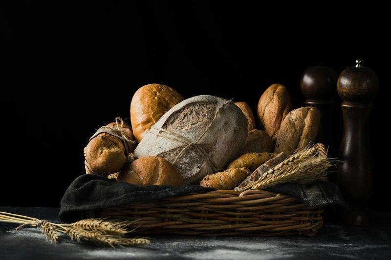
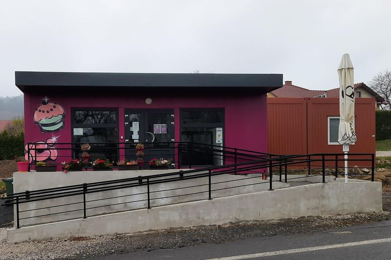
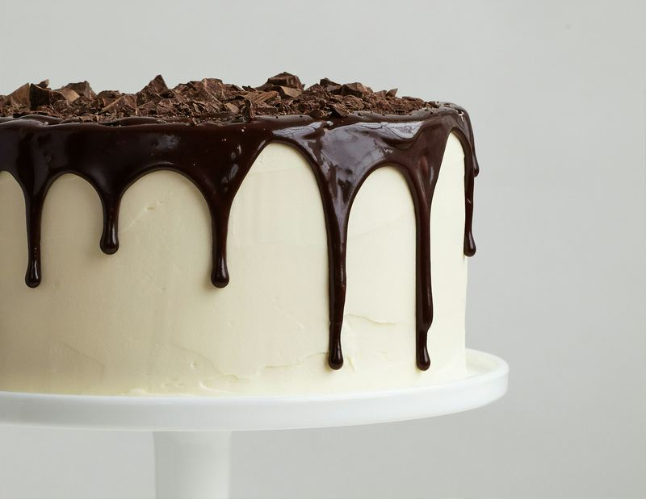

Bezlepkový chléb
Zákazníci si ho chválí. Kdo nesmí lepek, nemusí se vzdát čerstvého chleba.
Dortíci jsou malá cukrářská výroba v Rybí u Nového Jičína. Dorty na zakázku, zákusky a bezlepkový chléb. Prodejna má otevřeno v pátek od 11:30 do 16.
Pátek 11:30–16

Prodejna je otevřená jen v pátek. Objednejte si předem a v pátek si to vyzvedněte, nemusíte doufat, že na Vás něco zbude.
Do otevření zbývá
0 dní0 hod0 min
Vyberte pátek, kdy si objednávku vyzvednete:
Objednat na tento pátekNapište, co potřebujete. Když to umíme, upečeme to.

Zákazníci si ho chválí. Kdo nesmí lepek, nemusí se vzdát čerstvého chleba.

Narozeninové, dětské i svatební. Domluvíme velikost, příchuť a vzhled.

V pátek čerstvé v prodejně, větší množství na oslavu si objednejte předem.
„Super bezlepkový chléb.“
zákazník na Firmy.cz
„Bylo by super otevřeno každý den.“
zákazník na Firmy.cz